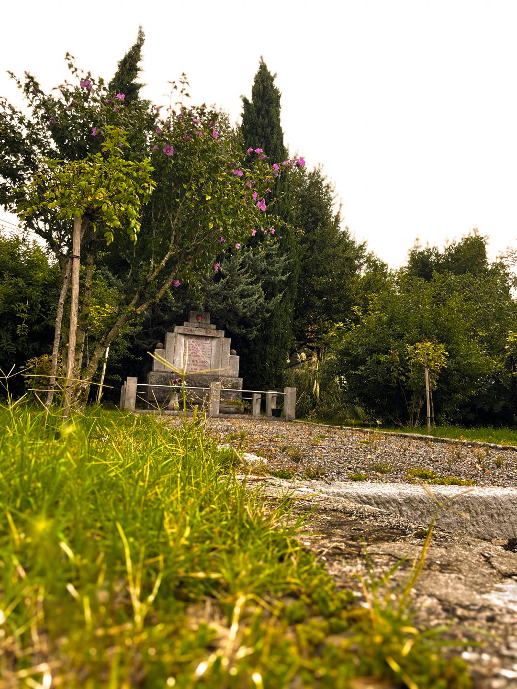
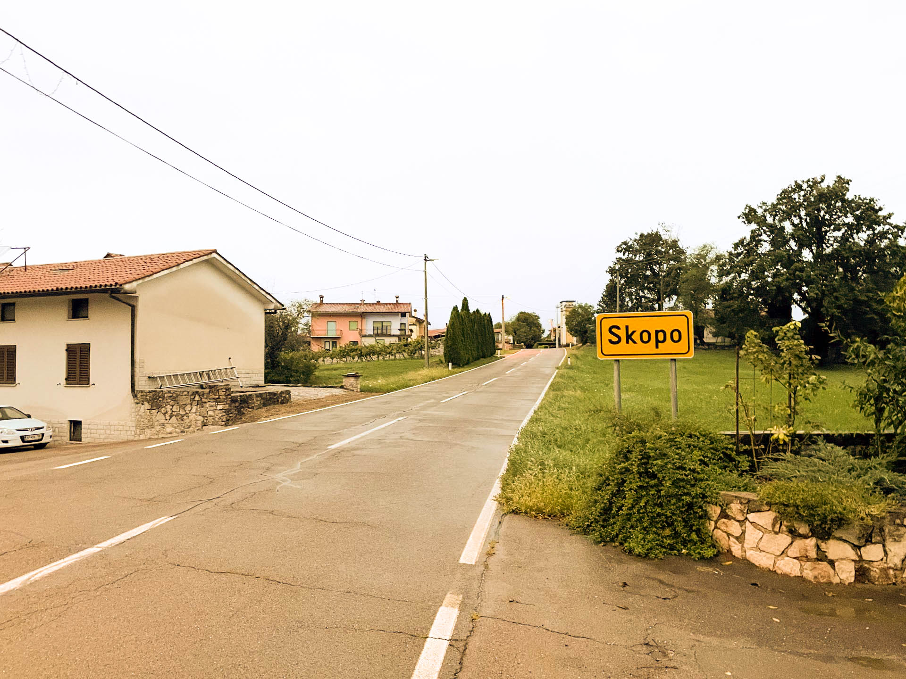
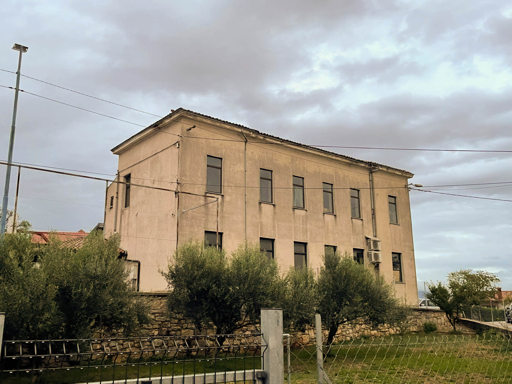
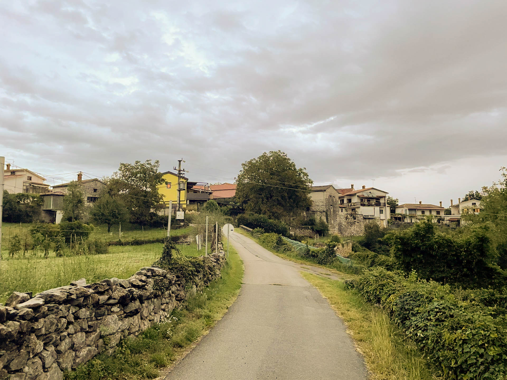
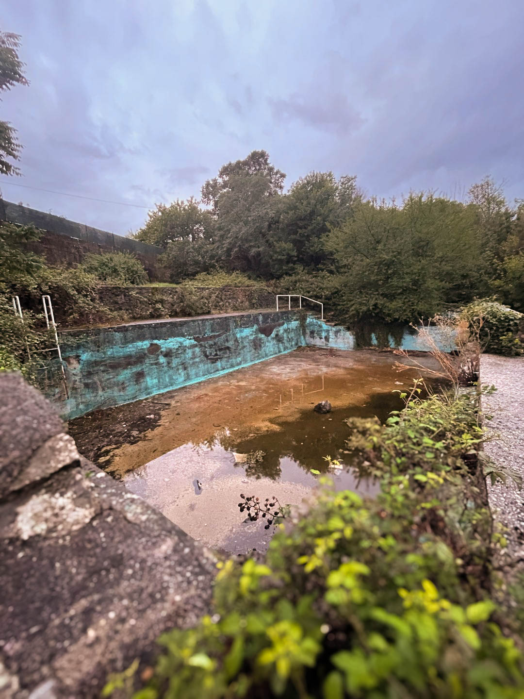
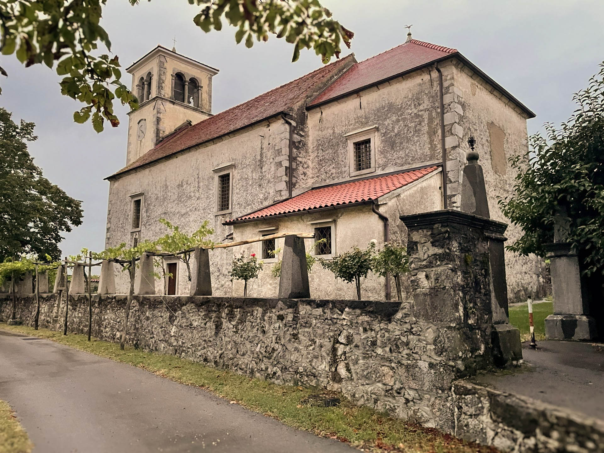

Znamenitost
To je spomenik padlih borcev in se nahaja v osredju vasi.

Tukaj napiši 4–6 povedi o svojem kraju. Predstavi, kje se kraj nahaja, po čem je znan, kaj je zanj značilno in zakaj si ga izbral za svojo fotografsko predstavitev.
Fotografije predstavljajo značilnosti, znamenitosti, naravo in življenje mojega kraja.

To je spomenik padlih borcev in se nahaja v osredju vasi.

Dodaj kratek opis značilnega objekta ali arhitekture.

To je kal ki se nahaja na začetku vasi pri cesti.

Pred mnogi leti se je to stavbo uporabljalo kot trgovino, pomembna je bila saj so jo ljudje jo redno obiskovali in kupovali stvari.

To je bila šola v preteklosti ampak nenazadnje je bila uporabljena ko gostilna.

Tukaj se veliko ljudi zbira za mašo.


Zapuščen bazen.
Izberi eno svojo fotografijo, ki ti je najbolj všeč, in razloži, zakaj.
Opišeš lahko motiv, svetlobo, kompozicijo, perspektivo ali zgodbo, ki jo fotografija predstavlja.

Poišči primeren YouTube videoposnetek, ki predstavlja tvoj kraj ali njegovo okolico.
Vir videa: YouTube – Volk
Vse fotografije na spletni strani so lastno delo avtorja, razen če je navedeno drugače.